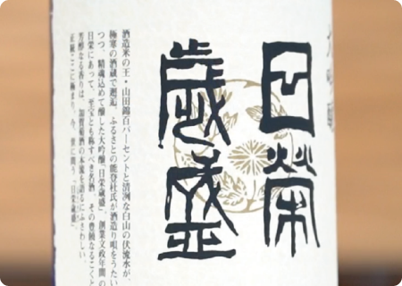
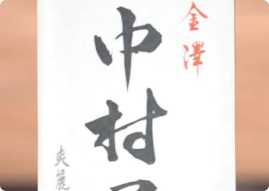
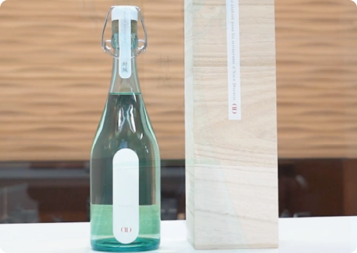

中村酒造株式会社
中村酒造株式会社 代表取締役社長
中村太郎さん
地元で愛される酒。
中村酒造の歴史は文政年間（1818～1829）に、石川県金沢の地において、中村屋と言う屋号で創業し酒商営業から始まりました。その後明治３年に酒造業を開始し、昭和62年には石川県野々市市に酒造工場を竣工して現在に至ります。金沢の料亭文化や茶懐石と共に歩んできた歴史を背景にして、地元で育まれたお米を能登杜氏の技術によって、地元の気候風土で醸す「地酒」にこだわります。この「地酒」にこだわり、「地酒」という新しい概念を弊社から創り、発信してゆくことが日本酒業界の再生につながると考えています。首紬は経済産業大臣指定の伝統工芸品であり、その技術は石川県の無形文化財に指定されています。そして牛首紬のアイデンティティは何か？それは、玉繭（二頭の蚕が共同で作った繭）から手挽きで糸を取って、その糸（玉糸）を使用した絹織物であるということです。玉糸を使用した牛首紬の織物や派生品は、それが伝統的工芸品から外れても、我々だからこそできる織物なのです。
日榮
金澤 中村屋
アラン・デュカス
AKIRA、猩々
（しょうじょう）